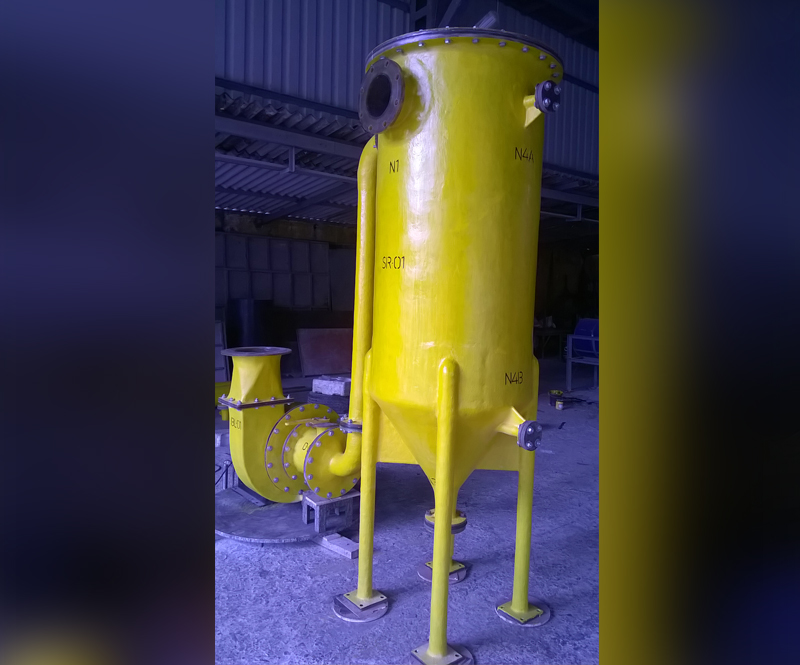

Fume Exhaust Systems

Overview
Coroseal designs and manufactures wide range of fume exhaust systems for expelling hazardous acid and chemical substances from the gas stream for both indoor and outdoor facilities. These units can be standard or customised to site constraints.
Typical Components
- Vertical and horizontal scrubbers
- Exhaust blowers and stacks
- Ducts, hoods and fan assemblies
- Packed beds and internals for mist removal
Materials & Design
FRP constructions with suitable resin systems; thermoplastic linings or dual-laminate options are available depending on chemical resistance needs.
Note: Images are referenced from `img/project/fume_exhaust_system/` — place your desired photos in that folder to display here.